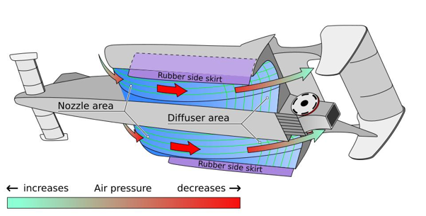

Table of contents |
|---|
| Abstract | Introduction |
| Analysis and discussion |
| References |
Ground-effect aerodynamics played an important role in modern Formula 1 from 2022-2025, allowing cars to generate downforce through airflow beneath the floor.
This article investigates how ground-effect aerodynamics generates downforce, how it improves cornering performance and the engineering challenges involved.
The article uses information from engineering publications and academic research to explain the Venturi effect, underfloor airflow and diffuser design, alongside their effects on car performance.
The findings show that accelerating airflow beneath the car creates a pressure difference, generating downforce and increasing tyre grip.
However, challenges such as porpoising and ride-height sensitivity can affect performance. Overall, the ground effect improves aerodynamic performance, but teams must balance downforce with stability
and driver comfort.
Downforce is what Formula 1 cars are best known for; it dramatically increases tyre grip without adding physical weight by pushing the car into the track,
hence allowing greater cornering speeds (Zhang, Toet and Zerihan, 2006). In modern-day F1, balancing the downforce of their cars effectively is often an important factor in a team's performance
(Motorsport Engineer, n.d.). In recent years, the ground-effect generation of F1 cars has returned following the introduction of new regulations in 2022, after underfloor ground-effect tunnels had been
prohibited under the regulations introduced for 1983 (Motorsport Engineer, n.d.; Rosario Giuliana, 2024). This paper explores the physics behind ground effect, looking at how pressure differences beneath
the car generate downforce and why that translates to faster lap times. Firstly, how ground-effect aerodynamics generates downforce through the Venturi effect and diffuser will be discussed,
followed by how this improves cornering and the engineering challenges associated with ground-effect cars.
How ground-effect aerodynamics works and how it generates downforce? The modern ground-effect era of F1 cars can be explained through four main areas: underfloor airflow, Venturi tunnel acceleration, diffuser expansion and floor-edge airflow control (Giuliana, 2024; Motorsport Engineer,n.d.). Ground effect works through pressure differences: as airflow accelerates through the narrower sections of the floor tunnels, its pressure decreases, generating downforce (Giuliana, 2024; Zhang, Toet and Zerihan, 2006). The Venturi effect is central to ground-effect aerodynamics. When a car brakes after a high-speed straight, the chassis pitches forwards, compressing the front suspension and changing the gap between the underbody and the track surface (Toet, 2017). This changing ride height matters because the aerodynamic performance of the floor and diffuser depends on the distance between the car and the track (Toet, 2017). This interaction is influenced by Venturi tunnels: passages that narrow before expanding towards the rear. As air flows underneath the car, it accelerates through the narrower section, reducing local air pressure. The higher pressure above the car then produces a net downward force (Giuliana, 2024; Zhang, Toet and Zerihan, 2006). Figure 1: Underbody airflow and ground-effect aerodynamics of the Lotus 79. The diagram illustrates how the nozzle and diffuser areas guide airflow beneath the car, while the side skirts help control airflow around the underbody (MagentaGreen, 2017).
Several features work alongside the Venturi tunnels to maintain effective airflow. Front-floor fences guide incoming air, while floor-edge geometry controls airflow entering the low-pressure region beneath the car. Vortex-generating features also help manage airflow around the floor edges (Toet, 2017; Zhang, Toet and Zerihan, 2006). At the rear, the diffuser gradually expands the airflow passage, allowing the air to slow down and its pressure to recover while maintaining the pressure difference beneath the car (Racecar Engineering, 2015; Toet, 2017).Vertical diffuser fences can improve efficiency by controlling airflow and limiting unwanted air entering from the sides (Racecar Engineering, 2015; Toet, 2017). Diffuser performance therefore depends on how airflow behaves around the entire underbody, not just the diffuser's shape. Together, the Venturi tunnels and diffuser generate downforce beneath the car, improving tyre grip and cornering performance. Why does downforce improve cornering? Downforce generated by ground-effect aerodynamics improves cornering performance by increasing the force pressing the tyres against the track, allowing them to generate greater grip and lateral forces. This enables Formula 1 cars to maintain higher speeds through corners before reaching the limits of tyre traction (Moore, 2026). However, generating downforce also creates aerodynamic drag, which opposes the car's forward motion and reduces its potential top speed on straights. Engineers must therefore balance downforce and drag according to each circuit's characteristics. Tracks with many corners generally require greater downforce, whereas circuits with long straights often favour lower-drag setups (Moore, 2026; LAS Motorsport, 2026). Furthermore, aerodynamic performance changes throughout a lap as speed, ride height and airflow conditions vary. Maintaining a consistent aerodynamic balance helps drivers use available grip effectively and can reduce excessive tyre sliding, which contributes to tyre wear and heat generation (LAS Motorsport, 2026). A primary benefit of underfloor-generated downforce is that it produces a less turbulent aerodynamic wake, or "dirty air." This allows cars to follow one another more closely through corners, creating more opportunities for overtaking. (Trackside Careers, n.d.). What are the engineering challenges of ground-effect aerodynamics? One of the main engineering challenges of ground-effect cars is porpoising, a bouncing phenomenon caused by changes in underfloor airflow. At high speeds, the downforce pulls the car closer to the track until the airflow beneath the floor becomes restricted and stalls. This causes downforce to suddenly decrease, allowing the suspension to push the car upwards. Airflow then reattaches, restoring downforce and repeating the cycle (The Pit Speed, n.d.; Trackside Careers, n.d.). To prevent this, teams must carefully manage ride height and suspension stiffness while maintaining a stable aerodynamic platform. The floor design is important, as teams must develop Venturi tunnels and floor edges that are less sensitive to changes in ride height (Trackside Careers, n.d.). Finding the correct setup involves compromises. A car needs to run low enough to generate strong downforce, but not so low that the airflow stalls. Similarly, stiff suspension helps maintain a consistent ride height but can make the car struggle over kerbs and uneven surfaces. These problems were particularly noticeable during the early stages of the 2022 regulations, when some teams experienced significant bouncing. Engineers must therefore balance aerodynamic performance with stability, suspension behaviour and driver comfort (Formula 1 Dashboard, n.d.). Conclusion: This article examined how ground-effect aerodynamics generates downforce in Formula 1 and how it contributes to improved cornering performance. The research shows that Venturi tunnels and diffusers accelerate and control airflow beneath the car, creating lower pressure and generating downforce. This increases tyre grip and allows cars to maintain higher speeds through corners. However, studying the engineering challenges faced by the ground effect era F1 cars shows that generating maximum downforce does not necessarily produce the fastest car. Teams must balance aerodynamic performance with ride height, suspension stability and driver comfort to achieve consistent performance.
Giuliana, R. (2024) ‘Formula 1 aerodynamics: What are Venturi tunnels and how does porpoising affect F1 cars?’, Raceteq, 2 October. (Accessed: 26 October 2026). Motorsport Engineer (n.d.) ‘How floor work boosts performance in Formula 1’. (Accessed: 26 October 2026). Racecar Engineering (2015) ‘Diffusers: Engineering basics | Aerodynamics’, 15 April. (Accessed: 26 October 2026). Toet, W. (2017) ‘Willem Toet explains…motorsport diffusers’, Race Tech Magazine, 8 August. (Accessed: 26 October 2026). Trackside Careers (2026) ‘F1 car floor explained: Aerodynamics, rules, and careers’, 1 October. (Accessed: 26 October 2026). Zhang, X., Toet, W. and Zerihan, J. (2006) ‘Ground effect aerodynamics of race cars’, Applied Mechanics Reviews, 59(1–6), pp. 33–49. MagentaGreen (2017) Lotus Modell 79 under-body.svg. Wikimedia Commons, 19 September. (Accessed: 26 October 2026). LAS Motorsport (2026) ‘Aerodynamics of Formula 1: How F1 cars generate downforce’. (Accessed: 26 October 2026). Moore, S. (2026) ‘Aerodynamics in race car design: Principles and applications’, Sarah Moore Racing, 27 March. (Accessed: 26 October 2026).
Word count loading...